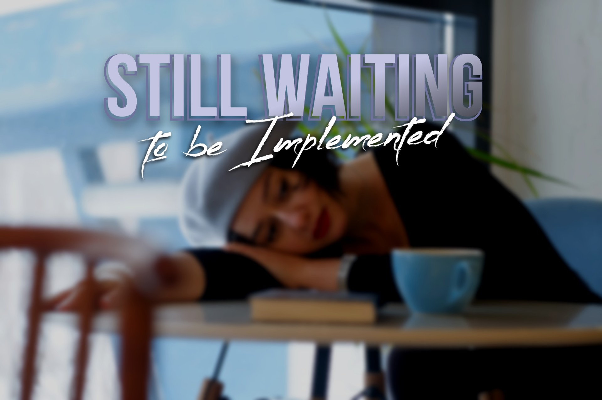

TODO
10 jan 2022
De student is in staat een vraagstuk op het gebied van Smart Industry te signaleren, te beschrijven, te analyseren en te beoordelen op wenselijkheid en haalbaarheid.
TODO
De student is in staat vernieuwende ideeën te ontwikkelen en deze te vertalen naar concepten voor processen, producten of diensten.
Voor smart technologie heb ik gewerkt met solidworks om een bakje voor mijn PCB te ontwerpen. Dit was nieuw voor mij gezien ik nog nooit met een CAD programma had gewerkt. Het was niet makkelijk om mee te beginnen maar ik kreeg het steeds beter onder de knie.
Fout bij het ophalen van de locatie. Dit komt waarschijnlijk doordat de API maar enkel paar keer aangeroepen mag worden per dag. Probeer het morgen weer. Voor de code zie Github
Voor smart connection heb ik van meerdere API’s gebruik gemaakt. Voor een mooie demo (te zien hiernaast) heb ik er 2 gebruikt en een Iframe. Eerst vraag ik aan een API wat het IP-adres is van de persoon die deze website bekijkt. Deze informatie geef ik door aan een andere API om een inschatting te doen van de locatie waar het apparaat zich bevind. Dit word dan weer getoont in het scherm hiernaast.

Voor smart project heb ik digital twins verwerkt in de code. Hierbij heb ik gebruik gemaakt van de SQLite database. Hier had ik nog nooit mee gewerkt maar het was verrassend makkelijk. De digital twins koppelde ik dan in mijn programma met de tags die de RFID scanner had gescand.
De student is in staat in een multidisciplinaire omgeving methoden en technieken op het gebied van projectmanagement te selecteren en toe te passen op een Smart Industry vraagstuk.
Voor het smart project van Alliander hebben we de Scrum werkmethode gebruikt. Dit hebben we gedaan door de project tijd in te delen in vier sprints elk van twee weken. Verder hebben we Trello gebruikt om onze taken te verdelen en een duidelijk overzicht te hebben van de taken die we moesten uitvoeren. Ook hebben we elke dag van de week een DSU gehouden om elkaar op de hoogte te houden van de progressie gemaakt de dag ervoor en de uitdagingen die we die dag zouden ondervinden.
De student is in staat in een multidisciplinaire omgeving methoden en technieken op het gebied van onderzoek te selecteren en toe te passen op een Smart Industry vraagstuk.

De opdracht van Alliander was om te kijken of het mogelijk was om met RFID een asset registratie
systeem te maken waarmee het administratie verminderd kan worden. Dit hebben we gedaan door meerdere
onderzoeken uit te voeren.
Onderzoeken voor software en onderzoeken voor hardware. Deze
onderzoeken zijn beschreven in smart
project.
De student kan, zowel in het Nederlands als het Engels, ideeen, meningen, standpunten en besluiten correct, begrijpelijk en overtuigend overbrengen met behulp van verschillende communicatiekanalen.

Voor smart start heb ik een presentatie gegeven
over de achterstand van technische innovatie in
Europa. Deze presentatie was gegeven aan de rest van de klas en was visueel gemaakt door middel van
een presentatie.
De achterstand van de technische innovatie kwam doordat europa (in verhouding)
minder gemakkelijk kan handelen met europese landen dan China en VS dat kunnen in hun provincies.
De student kan relaties en allianties binnen en buiten de eigen organisatie ontwikkelen en bestendigen en deze benutten voor het verkrijgen van informatie, steun en medewerking.
Tijdens het werken voor smart project hebben we (als we op locatie waren) meerdere keren samen een rondje gelopen, even een potje kaarten gespeeld tijdens de middagpauze. Ook hebben we op enkele donderdagen de dag na besproken in de bar (Lokaal 99’). Mede hierdoor konden we binnen het groepje goed met elkaar opschieten en verliep het werk soepel.
Voor het smart start project voor Alliander hadden we gebeld naar het bedrijf waar we hardware wilde gaan kopen voor advies. Tijdens het project hebben we meerdere keren contact gehad met deze persoon. Hij had ons geholpen met het werkend krijgen van de scanner en het doen van een update op de scanner. We hebben ook nog even kort het resultaat van het project naar hem gestuurd, gezien hij aangaf dat interessant te vinden.
De startende professional is in staat via de weg van reflectie zich professioneel te blijven ontwikkelen en een bijdrage te leveren aan de ontwikkeling van de organisatie en de beroepspraktijk door opgedane kennis te borgen, over te dragen en te verspreiden. Hierbij is de professional zich bewust van Smart Industry context waarin hij opereert en past zijn gedrag en/of zijn adviezen hierop aan.
Dit leerdoel is me minder goed gelukt dan ik zou willen. In het begin van de minor was ik nog wel redelijk bezig met goed bezig zijn met mijn eigen leerdoel. Echter, paar weken in de minor heb ik toch veel medestudenten de basis van programmeren uit moeten leggen omdat het mij ook hinderde om verder te gaan mijn mijn opdrachten. Als ik hier op terug kijk had ik misschien deze vragen ook kunnen verwijzen naar de paar andere studenten die ervaring hadden met programmeren om zo meer aan mijn eigen ontwikkeling te werken.
Met dit leerdoel ben ik wel verder gekomen doordat ik tijdens de lessen van Smart Business geleerd heb hoe ik na kan denken over wat verandering doen in een bedrijf en hoe het mogelijk is om deze te voorzien. Veel verder dan dit ben ik helaas niet gekomen doordat dit we niet zozeer ons hebben verdiept in dit onderwerp tijdens smart business. Wel zijn we hier deels op in gegaan tijdens smart technology met het uitwerken van een simpel product en het ontwerpen van een 3d model. Verder hebben we tijdens de lessen van 3D tekenen geleerd hoe additive manufacturing kan helpen van het creëren van een iteratief werkprocess. Met deze kennis zou ik een idee in kleine stapjes kunnen uitwerken en langzaam kunnen verbeteren tot het klaar is voor de markt.